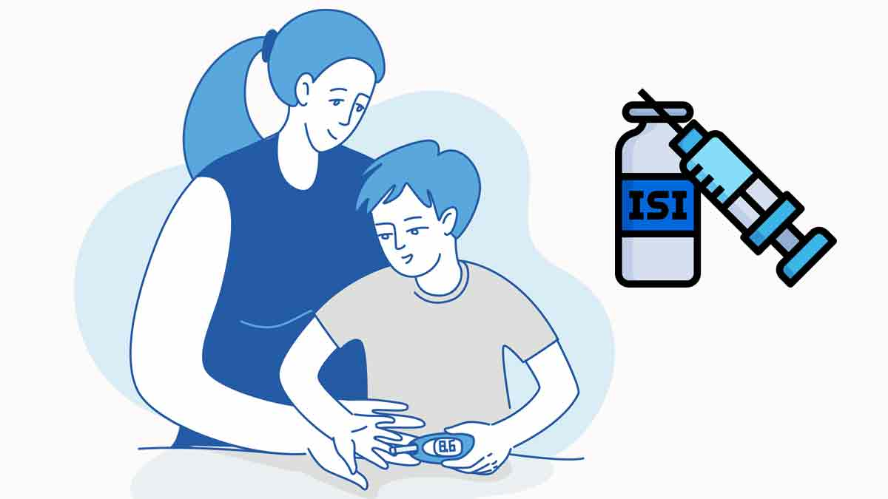
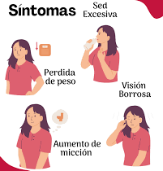
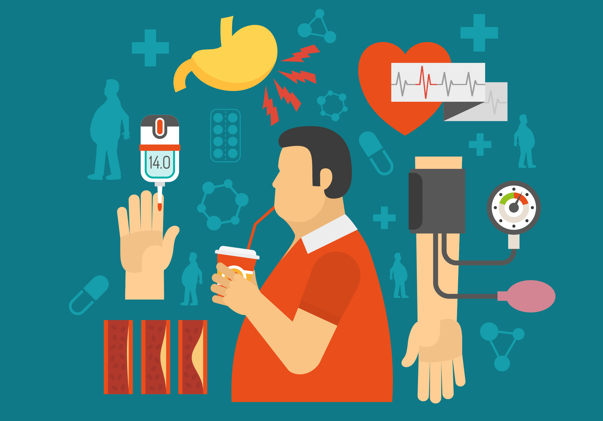

¿QUÉ ES LA DIABETES?
La diabetes es una enfermedad crónica donde los niveles de glucosa (azúcar) en sangre son muy altos
porque el cuerpo no produce o no usa bien la insulina. Se clasifican principalmente en tipo 1 (inmune),
tipo 2 (relacionada al estilo de vida) y gestacional. El control implica dieta, ejercicio y medicación para evitar complicaciones graves.
Es un trastorno metabólico caracterizado por la hiperglucemia (azúcar elevada) constante. La insulina, una hormona del páncreas, no funciona correctamente o falta, impidiendo que la glucosa entre en las células para dar energía. La diabetes no controlada puede dañar seriamente ojos (retinopatía), riñones (nefropatía), nervios (neuropatía) y el corazón (infartos)
Es un trastorno metabólico caracterizado por la hiperglucemia (azúcar elevada) constante. La insulina, una hormona del páncreas, no funciona correctamente o falta, impidiendo que la glucosa entre en las células para dar energía. La diabetes no controlada puede dañar seriamente ojos (retinopatía), riñones (nefropatía), nervios (neuropatía) y el corazón (infartos)
TIPOS DE DIABETES
Diabetes Tipo 1:
El cuerpo produce poca o ninguna insulina porque el sistema inmune daña el páncreas. Generalmente diagnosticada en jóvenes, requiere inyecciones diarias de insulina.
Diabetes Tipo 2:
La más común. El cuerpo es resistente a la insulina o no la produce adecuadamente. Asociada a obesidad, sedentarismo y factores genéticos.Diabetes Gestacional:
Niveles altos de azúcar desarrollados durante el embarazo.SINTOMAS COMUNES
- Necesidad frecuente de orinar (poliuria).
- Sed excesiva (polidipsia).
- Hambre extrema.
- Pérdida de peso inexplicable.
- Fatiga y visión borrosa.
- Cortes/moretones de lenta cicatrización y hormigueo en manos/pies.

FACTORES DE RIESGO (Tipo 2)
- Sobrepeso u obesidad (especialmente grasa abdominal).
- Sedentarismo (falta de ejercicio).
- Alimentación alta en azúcares y grasas saturadas.
- Antecedentes familiares y edad avanzada.

PREVENCIÓN Y CONTROL
- Dieta Saludable: Baja en carbohidratos refinados, azúcares y alimentos procesados.
- Ejercicio: Actividad física regular para mejorar la sensibilidad a la insulina.
- Tratamiento: Medicamentos orales o insulina, controlados por un médico.
- Monitoreo: Revisar regularmente los niveles de glucosa.